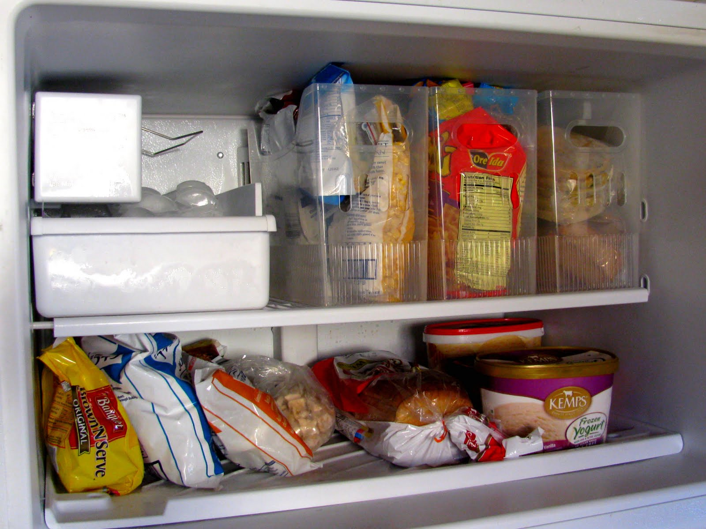

Faced with the problem of not remembering what food is in the refrigerator, many people do not have a fixed solution. Almost everyone is on a budget these days and saving money at the grocery store is one of the best ways to cut down on spending. With all of the time, money, and effort spent shopping for perishable food items, ensuring that they don't go to waste is important. In other words, an application that can record the time and expiration date of the last food purchase is very important.
And most of the existing applications only support a single operating system platform, which means that if family members or co-renting partners use different operating systems, they will encounter the inconvenience of being unable to share refrigerator information. What's more, these applications do not reflect the convenience of IoT technology, because they often require users to manually enter all data instead of importing data through barcodes or reports file from stores' website.
In response to the research on the above issues, this project will build a cloud application to record and manage refrigerator food storage. The user will enter the information of each purchase through a mobile device or desktop computer and store it in the Firebase Realtime Database. The user can enter the record of each food purchase through the following methods:
Through multiple data input sources, the application can greatly simplify the user's operation process. Users do not need to record all purchase records through tedious manual entry. Barcodes and external report files (e.g. Amazon order history ) will be used as a means to record main information, such as product name and quantity and price, while manual input will be used as an auxiliary means to complete other information, such as "best by" dates.
This application will be suitable for all users who do not have enough time and energy to manage the refrigerator. On the basis of user data, which is the record of food in the refrigerator, the application will generate a list of recommended purchase items so that the user can draw up plans for the next purchase. And since this application is a web application, it can perform the task of running across platforms very well. This can solve the aforementioned problem that information cannot be shared between devices us`ing different operating systems.